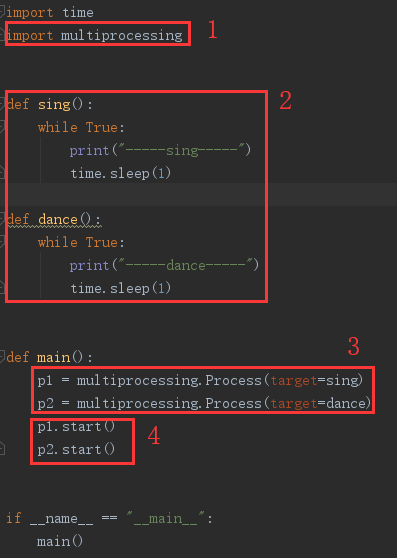

原文出处:本文由博客园博主YifChan提供。
原文连接:https://www.cnblogs.com/yifchan/p/python-1-42.html
原文连接:https://www.cnblogs.com/yifchan/p/python-1-42.html
Process多进程
进程的概念
程序是没有运行的代码，静态的；
进程是运行起来的程序，进程是一个程序运行起来之后和资源的总称；
程序只有一个，但同一份程序可以有多个进程；例如，电脑上多开QQ；
程序和进程的区别在于有没有资源，进程有资源而程序没有资源，进程是一个资源分配的基本单元；
程序在没运行的时候没有资源，没有显卡，没有网卡，等等；双击运行后有摄像头，有网速等等，就叫做进程；
进程的状态
进程状态图
- 就绪态：运行的条件都已经慢去，正在等在cpu执行
- 执行态：cpu正在执行其功能
- 等待态：等待某些条件满足，例如一个程序sleep了，此时就处于等待态
使用Process完成多任务
进程的使用步骤和线程的使用步骤基本一致；
进程的使用步骤：
- 导入multiprocessing；
- 编写多任务所所需要的函数；
- 创建multiprocessing.Process类的实例对象并传入函数引用；
- 调用实例对象的start方法，创建子线程。
进程使用步骤图示：

进程使用步骤代码


import time
import multiprocessing
def sing():
while True:
print("-----sing-----")
time.sleep(1)
def dance():
while True:
print("-----dance-----")
time.sleep(1)
def main():
p1 = multiprocessing.Process(target=sing)
p2 = multiprocessing.Process(target=dance)
p1.start()
p2.start()
if __name__ == "__main__":
main()运行结果：
-----sing-----
-----dance-----
-----sing-----
-----dance-----
-----sing-----
-----dance-----
......
进程：
- 主进程有什么，子进程就会有什么资源；
- 线程能创建多任务，进程也能创建多任务，但进程耗费的资源比较大；
- 所以运行的进程数，不一定越多越好；
- 当创建子进程时，会复制一份主进程的资源，代码，内存等，但又会有自己不同的地方，比如pid等；
- 我们可以理解为多进程之间共享代码，即只有一份代码，但有多个指向同一代码的箭头；
- 能共享的就共享，不能共享的就拷贝一份；不需要修改的就共享，要修改的时候就给你拷贝一份，这就是写时拷贝；
获取进程id
获取进程id代码
from multiprocessing import Process
import osdef run_proc():
"""子进程要执行的代码"""
print('子进程运行中，pid=%d...' % os.getpid()) # os.getpid获取当前进程的进程号
print('子进程将要结束...')
if __name__ == '__main__':
print('父进程pid: %d' % os.getpid()) # os.getpid获取当前进程的进程号
p = Process(target=run_proc)
p.start()
进程和线程对比
进程和线程的区别
- 进程是系统进行资源分配和调度的一个独立单位；
- 线程是进程的一个实体,是CPU调度和分派的基本单位,即是操作系统调度的单位，它是比进程更小的能独立运行的基本单位；
- 一个程序至少有一个进程,一个进程至少有一个线程；
- 线程的划分尺度小于进程(资源比进程少)，使得多线程程序的并发性高；
- 进程在执行过程中拥有独立的内存单元，而多个线程共享内存，从而极大地提高了程序的运行效率；
- 线程不能够独立执行，必须依存在进程中；
- 进程先有，才有的线程；
- 线程用资源去做事；
- 多线程能实现多任务是指在一个进程资源里面有多个箭头；多线程是在同一个资源里面有多个箭头执行同一份代码；
- 多进程的多任务是又开启了一份资源，在这个资源里面又有一个箭头；
- 进程执行方式1：在一份资源里面有多个箭头在执行；
- 进程执行方式2：有多份资源，在每一份资源里面有一个箭头执行代码；
- 线程执行开销小，但不利于资源的管理和保护，进程正好相反；
- 开发中还是多线程用的多；
通过队列完成进程间通信
队列使用语法
# 创建队列：
from multiprocessing import Queue
q = Queue(3)
# 往队列中添加数据：
q.put(xxx)
# 从队列中获取数据：
q.get()通过队列完成进程间通信代码
from multiprocessing import Queue
import multiprocessing
def download_data(q):
"""模拟这是从网上下载数据"""
data = [11, 22, 33]
for i in data:
q.put(i)
print("数据下载完成")
def deal_data(q):
"""模拟处理从网上下载下来的数据"""
data_list = []
while True:
data = q.get()
data_list.append(data)
if q.empty():
break
print("处理数据结束，数据为：", data_list)
def main():
q = Queue(3)
p1 = multiprocessing.Process(target=download_data, args=(q,))
p2 = multiprocessing.Process(target=deal_data, args=(q,))
p1.start()
time.sleep(1)
p2.start()
if __name__ == '__main__':
main()运行结果：
数据下载完成
处理数据结束，数据为： [11, 22, 33]
进程池完成多任务
进程池
进程池的概念
因为进程的创建和销毁是需要大量的资源的，为了减少消耗，当我们在处理多任务时，比如100个任务，我们可以先创建10个进程，然后用这10个进程来执行者100个任务，就可以重复使用进程，达到节约资源的目的了，而这个就可以使用进程池。
进程池的创建
任务数固定且较少，用普通的进程即可；任务数不确定，且比较多，就用进程池；
进程池不会等待进程执行完毕，我们需要使用po.join()让主进程等待进程池中的进程执行完；且po.close()必须在join前面；
创建进程池语法
# 创建进程池
from multiprocessing import Pool
po = Pool(3)
# 给进程池传递任务和参数
po.asyn(sing, (num,))
# 让进程池等待子进程执行完
po.close()
po.join()进程池pool示例
from multiprocessing import Pool
import os, time, random
def worker(msg):
t_start = time.time()
print("%s开始执行,进程号为%d" % (msg, os.getpid()))
# random.random()随机生成0~1之间的浮点数
time.sleep(random.random() * 2)
t_stop = time.time()
print(msg, "执行完毕，耗时%0.2f" % (t_stop - t_start))
def main():
po = Pool(3) # 定义一个进程池，最大进程数3
for i in range(0, 10):
# Pool().apply_async(要调用的目标,(传递给目标的参数元祖,))
# 每次循环将会用空闲出来的子进程去调用目标
po.apply_async(worker, (i,))
print("----start----")
po.close() # 关闭进程池，关闭后po不再接收新的请求
po.join() # 等待po中所有子进程执行完成，必须放在close语句之后
print("-----end-----")
if __name__ == '__main__':
main()执行结果：
----start----
0开始执行,进程号为7812
1开始执行,进程号为9984
2开始执行,进程号为1692
1 执行完毕，耗时0.65
3开始执行,进程号为9984
0 执行完毕，耗时1.08
4开始执行,进程号为7812
2 执行完毕，耗时1.82
5开始执行,进程号为1692
4 执行完毕，耗时1.12
6开始执行,进程号为7812
3 执行完毕，耗时1.35
7开始执行,进程号为9984
7 执行完毕，耗时0.11
8开始执行,进程号为9984
6 执行完毕，耗时0.50
9开始执行,进程号为7812
5 执行完毕，耗时0.65
8 执行完毕，耗时0.70
9 执行完毕，耗时0.74
-----end-----
多进程拷贝文件夹
多任务文件夹copy
步骤思路：
- 1.获取用户要拷贝的文件夹的名字；
- 2.创建一个新的文件夹；
- 3.获取文件夹的所有待拷贝的文件名；listdir()
- 4.创建进程池；
- 5.复制原文件夹中的文件，到新文件夹的文件中去；
多任务拷贝文件代码
import os
from multiprocessing import Pool
def copy_file(file, old_folder, new_folder):
old_f = open(old_folder+"/"+file, "rb")
data = old_f.read()
old_f.close()
new_f = open(new_folder+"/"+file, "wb")
new_f.write(data)
new_f.close()
print("创建文件成功:", file)
def main():
# 1.获取要拷贝的文件夹
old_folder = input("请输入你要拷贝的文件夹：")
# 2.创建新文件夹
new_folder = old_folder + "_复件"
try:
os.mkdir(new_folder)
print("创建文件夹成功")
except Exception as e:
pass
# 3.获取文件夹中所有待拷贝的文件,listdir()
files_list = os.listdir(old_folder)
# print(files_list)
# 4.创建进程池
po = Pool(5)
for file in files_list:
# 向进程池中添加复制文件的任务
po.apply_async(copy_file, args=(file, old_folder, new_folder))
# 复制原文件夹中的文件，到新文件夹中
po.close()
po.join()
if __name__ == '__main__':
main()在完成文件夹拷贝后，增加了一个需求，显示拷贝文件的进度条，怎么办？
多任务拷贝文件并显示进度条
如果要在进程池中使用Queue，要使用from multiprocessing import Manager ，使用Manager().Queue()；
显示进度条思路：
- 创建一个队列；
- 往拷贝文件的函数中传入队列，拷贝好一个文件就往q中传入该文件名；
- 在主函数中计算listdir()中的所有文件数量；
- 在主函数中定义一个num，初始值为0；
- 在主函数中定义一个while true，从q中获取文件每获取一个文件们就将num+1
- 计算，如果num的值大于等于总文件数量，就break；
- 使用已拷贝文件数量num除以总文件数量，即为拷贝的进度，使用开头\r 和end=""让显示进度不换行，如下：
print("\r已拷贝文件%.2f %%" % (copy_ok_file_num*100/all_file_len), end="")
多任务拷贝文件并显示进度条代码
import os
from multiprocessing import Pool, Manager
def copy_file(q, file, old_folder, new_folder):
old_f = open(old_folder+"/"+file, "rb")
data = old_f.read()
old_f.close()
new_f = open(new_folder+"/"+file, "wb")
new_f.write(data)
new_f.close()
q.put(file)
def main():
# 1.获取要拷贝的文件夹
old_folder = input("请输入你要拷贝的文件夹：")
# 2.创建新文件夹
new_folder = old_folder + "_复件"
try:
os.mkdir(new_folder)
print("创建文件夹成功")
except Exception as e:
pass
# 3.获取文件夹中所有待拷贝的文件,listdir()
files_list = os.listdir(old_folder)
# 4.创建进程池
po = Pool(5)
# 5.创建队列
q = Manager().Queue()
# 6.复制原文件夹中的文件，到新文件夹中
for file in files_list:
# 向进程池中添加复制文件的任务
po.apply_async(copy_file, args=(q, file, old_folder, new_folder))
all_file_len = len(files_list)
po.close()
# po.join()
copy_ok_file_num = 0
while True:
file = q.get()
copy_ok_file_num += 1
print("已拷贝文件%.2f %%" % (copy_ok_file_num*100/all_file_len))
# print("\r已拷贝文件%.2f %%" % (copy_ok_file_num*100/all_file_len), end="")
if copy_ok_file_num >= all_file_len:
break
print()
if __name__ == '__main__':
main()